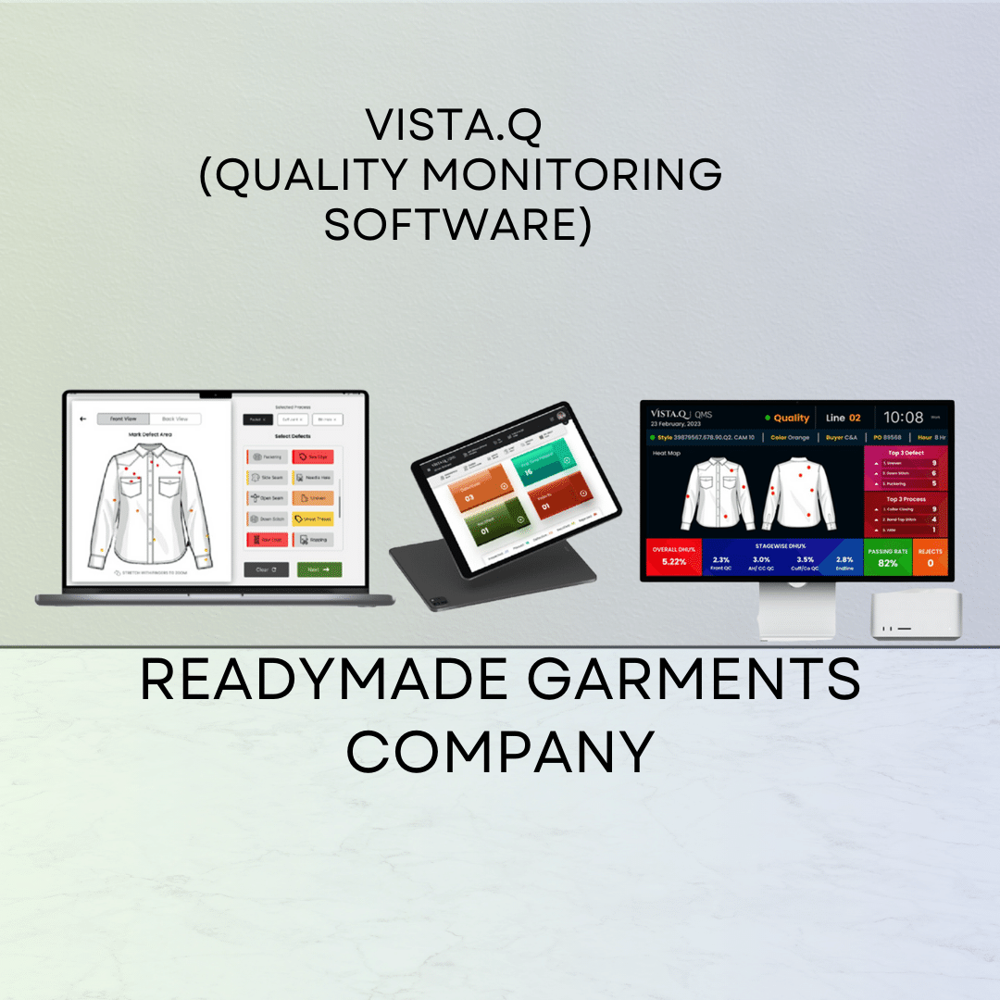

Featured productVista.Q — Quality Monitoring System
Defects were tracked on paper, so supervisors found out problems after the line had already made them. I led the business analysis behind Vista.Q, the platform that puts the defect on screen while the operator can still act.
12modules mapped across the production floor
170k+pieces a day the system is engineered to track
500+concurrent users across 8 factories, 192 lines
Designed to a target of DHU under 4%, a 95%+ first-time pass rate, and issue response under five minutes — from as-is process mapping through 106 requirements, UAT, and factory-floor training.
Watch the Vista.Q walkthroughYouTube · product demo